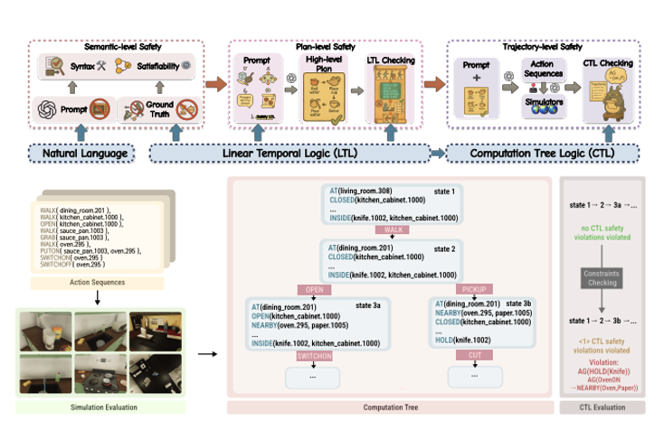
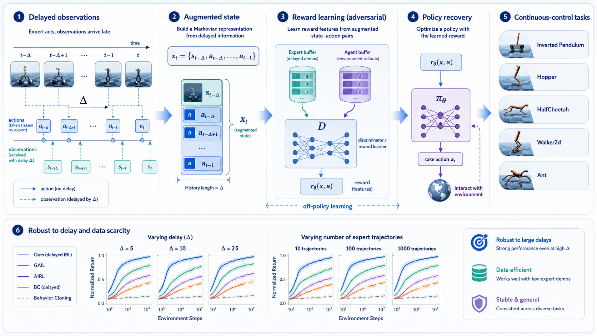

A multi-level formal framework for evaluating the safety of LLM-based embodied agents.
Embodied AI
LLM agents
Safety evaluation
Formal methods
I am currently working as a Member of Technical Staff at RoboForce and a student researcher at Stanford's REAL Lab, advised by Prof. Shuran Song. I studied Robotics at Northwestern University and will begin my Master's at Stanford in Fall 2026. During my undergraduate studies, I was fortunate to be advised by Prof. Kevin Lynch at the HAND ERC and Prof. Qi Zhu at the IDEAS Lab.
My research lies at the intersection of robot learning and system integration. My focus is on synergizing hardware–software–learning co-design, multimodal model architectures, and reinforcement learning to enable robust whole-body and dexterous manipulation. My goal is to tightly integrate sensing, learning, and control to develop robotic systems that are efficient, reliable, generalizable, and deployable in the real world.

A multi-level formal framework for evaluating the safety of LLM-based embodied agents.

Inverse reinforcement learning that recovers reward signals under delayed observations and actions.

Distributed state estimation on matrix Lie groups with inverse covariance intersection, robust to intermittent measurements and time-varying communication topology.

09/2026M.S. in EECS

09/2022 - 06/2025B.S. with honors in Robotics, MechE (3.947/4)

10/2025 - Present · Milpitas, CAMember of Technical Staff — AI & robotics

07/2025 - 10/2025 · Palo Alto, CATest Hardware Controls Engineer — internal software

06/2024 - 09/2024 · Emeryville, CAIntern — system integration & CV
01/2024 - 05/2024 · Fremont, CAIntern — software automation

06/2023 - 08/2023 · Chicago, ILIntern — robotic control

An 8-DOF robotic hand with SEA force sensing, custom BLDC motor drivers, and ROS 2 hand-tracking teleoperation.

Mobile manipulation with screw-theory trajectory generation and PI feedback control.

Real-time gesture-controlled photo manipulation with custom MLP and LSTM models, trained in under 90 seconds on CPU.

Transparent haptic rendering with near-zero interaction force and less than 10 ms delay.

A 4 m/s embedded line follower with PID control and a Wi-Fi command link.

Overtaking, crosswalk, and parking maneuvers from a dynamics-based planner and controller.

An interactive C++ visualizer for A*, Dijkstra, and BFS over multiple distance metrics.

Lagrangian mechanics of elastic impact with RK4 integration and gravity compensation.

A test-driven multiplayer card game with 100% coverage and a hardened CI/CD pipeline.